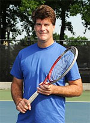

← Bài trước: Court Awareness | 🏠 Famous Coaches Trang chủ | Bài tiếp: → The Framework - A New Paradigm for Technique and Movement
Khám phá xoay thân đồng bộ của tôi
Thư viện kiến thức quần vợt thống nhất — Cơ bản, Phân tích kỹ thuật, Thư viện tham khảo và nhiều hơn nữa
Khám phá xoay thân đồng bộ của tôi
Tim Mayotte
Hai năm trước, tôi đang xem Novak Djokovic thi đấu với John Isner tại giải Miami Open. Isner tung ra một cú giao bóng khổng lồ, phẳng xuống phía T ở sân deuce. Djokovic xoay người, lao tới nhưng vẫn giữ được cân bằng và chặn lại cú giao bóng của Isner với sự tự tin, sâu xuống giữa sân.
Thái độ ngưỡng mộ của tôi dành cho cú trả giao bóng của Novak tiếp tục tăng lên suốt trận đấu. Làm sao mà Novak có thể làm được điều này lần lượt lại khi những người khác lại lúng túng?
Mùa hè năm sau, tôi lại xem anh ấy ở gần hơn, lần này tại Wimbledon trên sân Trung tâm. Điều tôi chứng kiến là một cuộc khám phá, giống như cách Thánh Paul phải cảm thấy khi ánh sáng thiên đường đánh bay anh ta khỏi ngựa trên đường đến Damascus. Nhưng cuộc khám phá của tôi là sức mạnh của Xoay thân đồng bộ và Thay đổi nắm vợt.
Cuộc khám phá về xoay thân đồng bộ bắt đầu khi tôi xem Novak trả giao bóng trái tay.
Điều quan trọng nhất
Nếu có một giai đoạn trong Khung chương trình mà việc cải thiện có tác động lớn và ngay lập tức nhất, đó là trong xoay thân đồng bộ và chuẩn bị nắm vợt.
Khi tôi thấy một tay vợt chảy vào một xoay thân đồng bộ đầy đủ, mạnh mẽ với ít chuyển động của vợt, tôi cảm thấy như bị gà đẻ. Cho dù đó là xoay thân mạnh mẽ, nhanh chóng của chị em Williams, hoặc Nadal khi xoay cho cú thuận tay bên trong, hoặc một học viên giỏi của tôi, khi tôi thấy một xoay thân đồng bộ xuất sắc, tôi biết một cú đánh đã được chuẩn bị và đầy tiềm năng.
Cú thuận tay bên trong của Nadal: một xoay thân đồng bộ đầy đủ, mạnh mẽ.
Khi làm việc với một học viên mới, tôi phân tích đầu tiên vị trí sẵn sàng, xoay thân đồng bộ và thay đổi nắm vợt. Rất dễ bị cuốn hút bởi hình dạng của các cú đánh mà không xem xét trước các yếu tố cơ bản.
Nếu có vấn đề với xoay thân, thường thì chúng ta có thể sửa chữa rất nhanh chóng. Và khi chúng ta làm được điều đó, sự cải thiện có thể rất đáng kinh ngạc. Những tiến bộ có thể đến từ cả chuyển động và sản xuất cú đánh.
Nếu một tay vợt học được cách xoay thân tốt, thì tôi biết rằng chúng ta có thể chuyển sang các yếu tố tinh vi hơn như nhịp điệu và mẫu chuyển động. Nhưng nếu xoay thân đồng bộ kém, nó vẫn là trọng tâm của chúng ta. Không gì tốt đẹp nào có thể xảy ra nếu xoay thân đồng bộ và thay đổi nắm vợt không được thực hiện đúng cách.
Tôi đã nói về vị trí sẵn sàng và xoay thân đồng bộ—nhưng tôi đã bỏ qua bước chia đôi vào vị trí sẵn sàng. Điều này là vì hầu hết các tay vợt mới và trung cấp chưa đủ mạnh mẽ để đẩy mạnh mẽ ra khỏi bước chia đôi. Thậm chí còn có sự khác biệt lớn về thời gian và sức mạnh của bước chia đôi giữa các tay vợt chuyên nghiệp. (Để biết thêm về Bước chia đôi, Nhấp vào đây.) Một bước chia đôi tốt là chìa khóa để đạt được tiềm năng của bạn. Nhưng tay vợt có thể làm việc để cải thiện bước chia đôi sau. Xoay thân đồng bộ và thay đổi nắm vợt là khác.
Bạn không cần sức mạnh khổng lồ để làm chúng đúng. Do đó, tôi rất nghiêm ngặt khi dạy xoay thân đồng bộ ở tất cả các cấp độ.
Vị trí sẵn sàng với tư thế tốt và khoảng cách giữa cánh tay và thân thể.
Đặt nền tảng
Vậy xoay thân đồng bộ bắt đầu như thế nào? Tay vợt bước chia đôi (hoặc những gì có thể coi là bước chia đôi tùy thuộc vào khả năng và cấp độ) vào vị trí sẵn sàng. Nếu vị trí sẵn sàng đúng, tư thế sẽ tốt và có khoảng cách giữa cánh tay và thân thể.
Trong hầu hết các trường hợp khi người chơi bước, chân đang hướng về phía mạng dù những tay vợt cao cấp đôi khi bắt đầu xoay chân trong không trung.
Mục tiêu
Sau bước chia đôi, mục tiêu đầu tiên là xoay cơ thể, chân, eo và vai hướng về phía hướng người chơi phải di chuyển. Mục tiêu thứ hai là đặt vợt ở vị trí tốt nhất để đánh bất kỳ cú đánh nào và cho phép (không cản trở) chuyển động đến bóng. Tất cả điều này cần được thực hiện trước khi người chơi bước một bước đầy đủ về phía bóng.
Hầu hết các cú đánh yêu cầu người chơi phải làm điều này ngay lập tức trước khi di chuyển về phía bên thuận tay, bên trái tay, hoặc chuẩn bị cho cú thuận tay bên trong. Những lần duy nhất không phải như vậy là khi người chơi cần chạy nhanh về phía trước cho cú bỏ nhỏ hoặc cú đánh đến rất cao và chậm.
Thỉnh thoảng họ vẫn đứng yên khi bóng bay. Lúc đó đã quá muộn để có gì tốt xảy ra. Do đó, hầu hết các tay vợt phải được đào tạo có ý thức để phản ứng với cú đánh và bắt đầu xoay thân đồng bộ ngay lập tức.
Xoay thân đồng bộ, trước khi người chơi bước một bước về phía bóng.
Nếu bạn nhớ lại từ bài viết đầu tiên của tôi trong loạt bài này (Nhấp vào đây), quy tắc số 4 của Khung chương trình là người chơi nên cố gắng cho chuyển động và đòn vợt liên tục, mượt mà. Nhiều tay vợt ở cấp câu lạc bộ rất chậm để di chuyển ra khỏi vị trí sẵn sàng.
Vậy chuỗi chính xác là gì? Sau bước chia đôi, chân, hông và vai nên xoay cho đến khi chúng song song với baseline. Tất cả điều này cần được thực hiện trước khi người chơi bước một bước.
Thay đổi nắm vợt
Một yếu tố quan trọng có thể khó khăn là đảm bảo bạn có nắm vợt đúng khi bắt đầu đẩy đến cú đánh. Thay đổi nắm vợt cần được hoàn thành trước khi người chơi đẩy.
Khó khăn của việc thành thạo thay đổi nắm vợt không nên bị đánh giá thấp. Tôi đã có các tay vợt trẻ giỏi làm thay đổi nắm vợt chỉ một giây trễ. Kết quả là họ gặp khó khăn với các cú đánh đến khó như giao bóng lớn.
Nếu xoay thân và thay đổi nắm vợt không được thực hiện tốt thì khả năng đạt được chuyển động mượt mà cũng như chuẩn bị vợt xuất sắc bị tổn hại.
Tôi sẽ không đi sâu vào các thay đổi nắm vợt khác nhau ở đây. Các sự kết hợp khá phức tạp. Nhưng đây là một số hướng dẫn.
Xem Dimitrov khi anh ấy xoay bên đánh của vợt hướng về đối thủ và xoay nắm vợt ngay từ đầu của xoay thân.
Vị trí vợt quan trọng. Đối với các cú đánh đất có xoáy cuộn, bên đánh của đầu vợt nên hướng ra khỏi người chơi hướng về đối thủ và song song với baseline. Nếu cần thay đổi nắm vợt, bàn tay không chủ đạo giúp hướng vợt đến nắm vợt đúng.
Đối với tay vợt có trái tay một tay, bàn tay không chủ đạo nghỉ ở cổ vợt. Đối với tay vợt có trái tay hai tay, người chơi thường có cả hai bàn tay trên nắm vợt như Andy Murray. Nhưng những tay vợt khác như Novak Djokovic trượt bàn tay xuống.
Đối với cú bắt lưới và cú cắt bóng, người chơi cần hướng vợt về phía trước. Đối với cú bắt lưới và cú cắt bóng trái tay, điều này được thực hiện bằng cách gập cổ tay.
Bàn tay trái ổn định vợt. Các biến thể rất nhiều nhưng mục tiêu là đạt được nắm vợt đúng ngay lập tức, ngay từ đầu của bước đẩy.
Làm việc cùng nhau—hay không
Bây giờ hãy quay lại với cú trả giao bóng của Djokovic. Khi xem anh ấy vào ngày đó tại Wimbledon, tôi bắt đầu tinh chỉnh các quy tắc của Khung chương trình.
Quy tắc #1 nói rằng chuyển động và đòn vợt phải được phân tích cùng nhau. Quy tắc #3 nói rằng người chơi nên cố gắng giảm biến số. Và Quy tắc #4 nói rằng người chơi nên cố gắng cho chuyển động và đòn vợt mượt mà.
Ít chuyển động nhất khi kết thúc với cánh tay ở mức độ.
Cú trái tay trả giao bóng của Novak thể hiện các yếu tố đó cũng như bất kỳ cú đánh nào trong quần vợt. Novak là thầy thuốc của nghệ thuật làm ít nhất có thể. Vợt được chuẩn bị chủ yếu bởi xoay chân, hông và vai với ít chuyển động bổ sung.
Cụm từ cũ “Lấy vợt của bạn về” đặt trọng tâm vào hành động cánh tay độc lập. Điều này rất sai lầm. Cơ thể làm việc cho bạn.
Nhưng hãy chú ý đến các yếu tố khác. Khi Novak xoay để trả giao bóng của Isner, cánh tay của anh ấy hầu như không di chuyển. Chúng không di chuyển lên hoặc xuống hoặc ra khỏi thân thể một cách đáng chú ý. Nhiều tay vợt chuyên nghiệp không hiệu quả hoặc tiết kiệm năng lượng như vậy.
Cánh tay bắt đầu xoay với cánh tay giữ khoảng cách thích hợp từ thân thể. Khoảng cách cánh tay sẽ được giữ trong chuyển động đến bóng khi đòn vợt bắt đầu.
Lại một lần nữa, Quy tắc #4 là mục tiêu giảm biến số. Bằng cách bắt đầu và giữ cú đánh với khoảng cách tốt, các tay vợt giỏi giảm chuyển động đến mức tối thiểu.
Kết hợp xoay chân và cơ thể này với vợt và vị trí cánh tay hoàn hảo cho phép cơ thể di chuyển mượt mà và cân bằng nhất có thể.
Chân ngoài của Novak xoay như một khớp trơn.
Tại sao cánh tay ở mức độ lại quan trọng? Bởi vì cánh tay và vợt có khối lượng và trọng lượng thực sự. Nếu người chơi có vị trí cánh tay kém, khối lượng đó cản trở người chơi. Thực sự, người chơi có thể ném chính mình theo hướng sai.
Muốn chứng minh điều này cho chính mình? Hãy thử thí nghiệm này. Cầm một túi đồ ăn rồi chạy như bạn đang đi đến thuận tay hoặc trái tay.
Nếu túi đó không ở vị trí đúng, nó sẽ cảm thấy rất khó chịu và chuyển động của bạn bị cản trở nghiêm trọng. Hãy thử chạy với túi đó nâng cao hơn vai sau, ví dụ. Hoặc thả xuống dưới eo. Bạn sẽ ngay lập tức cảm thấy cách mà vị trí đó sẽ cản trở bạn.
Tuy nhiên, nhiều tay vợt, ngay cả các tay vợt chuyên nghiệp, nâng vợt và cánh tay quá cao khi họ di chuyển đến thuận tay. Nhiều tay vợt giữ vợt quá thấp ở bên trái tay. Tôi tin rằng người chơi không nên di chuyển với cánh tay ở trên mức độ vai hoặc dưới eo.
Vậy quay lại với Novak. Trên cú trái tay trả giao bóng, Novak bước với chân hướng về phía mạng, hoặc đôi khi ở góc nhỏ hơn. Nhưng sau đó, như thể chân ngoài của anh ấy đang trên một khớp trơn, nó xoay song song với mạng. Hãy tưởng tượng thiết bị tuyệt vời tại nhà hàng Trung Quốc địa phương của bạn, Lazy Suzan. Hiểu được tất cả điều này vào ngày đó tại Wimbledon, tôi muốn nhảy ra khỏi ghế của mình và hét lên, “Đó là một kỳ tích.”
Trong những năm cuối của sự nghiệp của tôi, tôi đã vật lộn với cú trái tay trả giao bóng của mình. Tôi không bao giờ cảm thấy mình có sức mạnh hoặc đòn bẩy. Djokovic đã giúp tôi thấy ánh sáng. Vấn đề cơ bản là tôi chưa bao giờ xoay chân ngoài song song với mạng và do đó cơ thể của tôi không xoay.
So sánh mức độ xoay của Harrison với Novak.
Một số tay vợt nghĩ rằng tôi quá nghiêm ngặt khi dạy các yếu tố của xoay thân đồng bộ và thay đổi nắm vợt. Nhưng một vài độ ít xoay chân hoặc thay đổi vợt quá xa lên hoặc xuống có tác động khắc nghiệt và đau đớn. Để minh họa điểm này, tôi thường đưa ra ví dụ về trái tay của Djokovic so với Andy Roddick và Ryan Harrison.
Các trái tay kém của Ryan và Andy bắt đầu với xoay chân ngoài kém, dẫn đến xoay vai kém. Cả hai người cũng đẩy vợt ra khỏi cơ thể và hướng về phía trước, làm tăng khả năng di chuyển song song với baseline hoặc lùi lại do trọng lượng của cánh tay và vợt.
Xoay kém của họ dẫn đến chân có phần bị rối trên bước đầu tiên. Điều này lại dẫn đến không thể đạt được xoay tối ưu. Bản chất trái tay của họ đã bị phá hủy ở giai đoạn đầu. Như chúng ta sẽ thấy sau, chuyển động kém đến bóng cũng dẫn đến phục hồi kém hiệu quả.
Hơn nữa, xoay thân đồng bộ kém này dẫn đến lựa chọn chiến thuật bị tổn hại. Tôi nhớ xem Harrison thi đấu với Nadal tại giải Mỹ Mở rộng. Anh ấy, giống như Roddick đôi khi làm, đã quay lại xa trong sân và cắt bóng. Kết quả, không tốt. Nhưng điều không được biết rộng rãi là các vấn đề bắt đầu với một xoay thân đồng bộ kém.
Sai lầm của Trò chơi Nội tâm
Tim Henman thể hiện xoay chân và cơ thể trên cú bắt lưới.
Tim Gallaway và những người khác đã nói rằng nếu chúng ta chỉ thoát khỏi đường đi của mình thì cơ thể sẽ làm việc tự nhiên. Tôi tin rằng suy nghĩ đó có thể giúp người chơi chơi quần vợt trung bình tốt hơn. Ý tưởng rằng một tay vợt tìm được con đường dẫn đến vĩ đại bằng những gì cảm thấy tốt không công nhận sự thật là những gì cảm thấy tốt có thể không tốt. Có những yếu tố đúng đắn nhất định của trò chơi mà không có gì cảm thấy phức tạp, không tự nhiên hoặc thậm chí kỳ quặc đối với một tay vợt có vấn đề.
Tôi nói từ kinh nghiệm của mình.
Những gì tôi thấy các tay vợt giỏi làm trên xoay thân đồng bộ không cảm thấy đặc biệt tự nhiên với cách tôi đã chơi trong nhiều thập kỷ. Cú đánh duy nhất tôi tự hào là cú bắt lưới, đặc biệt là cú bắt lưới đầu tiên từ giao bóng và chơi bắt lưới.
Lý do? Trên các cú bắt lưới của tôi, tôi xoay chân và hông trong quá trình xoay thân đồng bộ. Vì vậy, các cú bắt lưới của tôi chia sẻ một số điều với cú trả giao bóng của Djokovic. Trước khi đẩy đến cú đánh, chân của chúng tôi đã xoay theo hướng đúng. Vợt được lấy lại bằng xoay vai với nắm vợt ở vị trí.
Nguyên nhân của vấn đề
Hầu hết các vấn đề kỹ thuật, đặc biệt là đối với tay vợt trung cấp và dưới, bắt đầu với vấn đề này về xoay thân đồng bộ. Nhiều tay vợt phát triển xoay thân dễ dàng và tự nhiên, nhưng nhiều tay vợt, và lại, ngay cả những tay vợt giỏi, vật lộn với xoay thân ở một bên. Jez Green, người là huấn luyện viên chuyển động của Andy Murray, đã nói với tôi rằng Murray giỏi hơn khi đi đến trái tay hơn là thuận tay. Green nói rằng họ luôn làm việc với sự linh hoạt của hông của Murray để cải thiện xoay thân đến bên đó.
Một bước chia đôi cấp cao có thể thêm năng lượng cho xoay thân.
Trong việc huấn luyện của tôi, tôi đã làm việc với một cô gái tài năng rất khó khăn khi đi đến trái tay. Đã mất gần một năm để có được xoay thân xuống đúng trong trận đấu. Không có lý do gì để sửa chữa các vấn đề khác trong trái tay của cô ấy cho đến khi chuyển động ra khỏi xoay thân đồng bộ là đúng. Nhưng cô ấy luôn có khả năng xoay thân tốt ở bên thuận tay.
Thực tế là ở xoay thân có rất nhiều điều có thể sai. Khi đi đến bên thuận tay, người chơi nâng cánh tay chủ đạo và vợt ở hoặc trên mức độ vai. Điều này tạo ra sự mất cân bằng có thể kéo cơ thể lên khỏi mặt đất.
Khi người chơi kéo vợt xuống khi đi đến trái tay hai tay, nó tạo ra sự mất cân bằng ở hướng ngược lại. Các vấn đề tương tự xảy ra trên trả giao bóng. Kết quả trở nên rõ ràng khi một tay vợt phải di chuyển nhanh sang một bên hoặc bên kia. Nhưng nếu chúng ta chỉ xoay vai và vợt không di chuyển hoặc di chuyển rất ít, chúng ta đã hoàn thành công việc. Năng lượng tiềm năng được lưu trữ và tay vợt sẵn sàng nhảy đến bóng.
Và vòng tròn hoàn chỉnh
Điều này đưa chúng ta quay lại với bước chia đôi. Một bước chia đôi tốt như một trận động đất. Nó tạo ra năng lượng bổ sung lớn, nhưng trước khi sử dụng năng lượng đó trong việc nhảy đến cú đánh, một tay vợt phải ổn định, linh hoạt và thư giãn trên phần trên người khi bước. Đó là những gì một bước chia đôi tốt cho phép.
Giống như một tòa nhà an toàn động đất, tay vợt hấp thụ sóng năng lượng, giữ chuyển động bổ sung trong phần trên người và vợt ở mức tối thiểu. Điều này cho phép cánh tay và vợt ở trạng thái ổn định, giảm biến số.
Nếu thực hiện đúng, một bước chia đôi tốt sau đó đặt nền tảng cho một xoay thân đồng bộ mượt mà hơn và mạnh mẽ hơn, và đẩy và gia tốc tối đa đến cú đánh. Nhưng tất cả điều đó phụ thuộc vào một xoay thân đồng bộ tốt.

Sau khi kết thúc sự nghiệp chuyên nghiệp huy hoàng, Tim Mayotte hiện đang tập trung vào việc phát triển chương trình huấn luyện quần vợt tốt nhất ở Mỹ. Trong 12 năm, Tim đã đào tạo các tay vợt trẻ và tay vợt trẻ ở khu vực Boston và phát triển Khung chương trình của mình, phương pháp dạy học cách mạng của anh ấy thống nhất các cú đánh và chuyển động. Là một tay vợt đại học tại Stanford, Tim đã dẫn dắt đội của mình giành chức vô địch NCAA, giành chiến thắng cá nhân ở đơn nam vào năm 1981.
Tim đã giành được 13 danh hiệu ATP, là bán kết tại Wimbledon và giải Úc Mở rộng và giành Huy chương Bạc tại Thế vận hội năm 1986. Tim có những trận thắng trước hầu hết các tay vợt hàng đầu của thời đại mình, bao gồm John McEnroe, Jimmy Connors, Stefan Edberg, Boris Becker, Andre Agassi và Pete Sampras.
Anh ấy từng là thành viên của Hội đồng quản trị ATP, là Chủ tịch Hội đồng Người chơi ATP, và cũng là người bình luận truyền hình trong 5 năm trên USA Network. Một cựu sinh viên của Stanford với bằng lịch sử, anh ấy cũng có bằng thạc sĩ về tâm lý học và thần học từ Học viện Thần học Liên hiệp.
Nguồn: tennisplayer.net lưu trữ — My Unit Turn Revelation.docx (Thư viện giảng dạy của John Yandell, 2002-2022). Trích xuất và hiển thị dưới dạng HTML cho Tennis Future Lab.